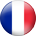
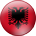
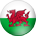
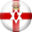
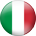
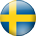
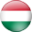
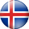

"Все, что происходит во Франции," писал Ларошфуко. Соединение между Северной Европой и на юге, разделяя сухопутные границы с семью странами и в поле зрения другого через Ла-Манш, l'Hexagone уже давно в Европе бьется сердце. Глобальные философии, культуры и художественные движения появились из этого большого плавильного котла, но его привлекательность и открытость в ряде случаев был его крушением - Франция потерпела столько войны, как это обсуждаемый мир.
Известные деятели
Мировой культуры, спорта, науки и политики все это может обнаружить различные французские водяные знаки. Шарль де Голль распространять республиканские идеалы, в то время как послание вольнодумство и романтики поэтично распространены подобными Виктора Гюго, Жан-Жака Руссо, Вольтера и Жан-Поль Сартр. Художники (Поль Сезанн, Клод Моне), композиторы (Гектор Берлиоз, Морис Равель), архитекторы (Лево, Ле Корбюзье) - почти каждая прядь культуры имеет французский акцент. Точно так же большие в мире спортивных событий, Олимпиада, Чемпионат мира по футболу, Чемпионат Европы УЕФА и Лиги чемпионов УЕФА, ведут свое происхождение обратно во Францию.
Еда
Где бы начать? С Bon Appetit, возможно, что основным продуктом фраза не заинтересованных в настоящее время ограничивается синими обматывает на старых картах , которые когда - то означали империю Франции. Для своей цели она не может быть улучшено, а в желудках многих, и не может французской гастрономии. При таком огромном диапазоне климатических условий и ландшафта, кладовая хорошо укомплектованным; и от Жана Anthelme Брилья-Savarin к Поль Бокюз, он извлек выгоду из писателей, художников и поваров с сенсорным алхимика. Фуа - гра, Cassoulet, квашеной капусты, буйабес, андуйет - в каждой местности есть свои фирменные блюда, свои собственные интерпретации.
Спорт
Футбол является самым популярным видом спорта во Франции, с около двух миллионов лицензированных игроков. Тем не менее, страна имеет богатую традицию в командный вид спорта в целом - Les Bleus были бегунами на чемпионате мира по регби 2011 IRB и царят мужские олимпийские чемпионы по гандболу. Франция также имеет плодовитый производственную линию баскетболистов, велосипедистов и водителей автоспорта, а в теннис в Открытом чемпионате Франции является одним из четырех турниров Большого шлема. Самое большое ежегодное спортивное событие является езда на велосипеде Тур де Франс, который привлекает в районе 12 миллионов зрителей.
Футбол
Родина в мире трех крупнейших футбольных турниров, Франции пришлось ждать до 1984 года , чтобы выиграть один , как финал-рекорд Мишеля Платини девять голов помогли трехцветные на чемпионата Европы славы. Зинедин Зидан был талисманом на рубеже веков, вдохновляя Францию к победе на домашнем торфе на чемпионате мира 1998 , а затем в евро через два года. На самом деле они были континентальные обладатели титула в каждой возрастной группе в то время как французские клубы восторжествовали в мужских и женских чемпионов УЕФА Лиги.
Клубы
Elite французского футбола остался любителем до 1932/33, но их клубы были до скорости с появлением европейского футбола и Стад де Реймс были бегунами до Реала в первом финале Кубка европейских чемпионов. Он не был до 1993 года , что французская сторона управляла Европу как Олимпика, традиционные домашние электростанции с Сент-Этьен, обыграл Милан. Olympique Lyonnais поднял семь последовательных титулов в начале века, но в последнее время Ligue 1 было отмечено , для ее конкурентоспособности, с пятью различными чемпионами , как много сезонов.

Расположенный на юго-западе французской столицы, Парк-де-Пренс получила свое название своему расположению на местности, используемой в качестве королевской охоты в 18-м веке.
В настоящее время стадион является третьим, был построен на месте, первым открыл свои двери в 1897 году, а второй в 1932 году следующее.
Парк де Пренс был завершающим пунктом Тур де Франс с 1903 по 1967 год; она также имеет долгую историю в качестве международного места для регби.
Он провел шесть европейских футбольных клуба, в том числе финал первого в истории Кубка европейских чемпионов в 1956 году яркий пример, когда Реал обыграл Стад-де-Реймс-Шампань, со счетом 4-3.
В дополнение к постановке игры на Чемпионат мира по футболу 1938 и 1998 годов, стадион был местом проведения чемпионатов Европы финалах 1960 и 1984.
Первая часть ремонтных работ проводится была завершена летом 2014 года с двумя новыми рядами сидений добавляют ближе к полю, а также скамейки запасных новых и совершенно новых исполнительных коробок и салонов.
Реконструкция Парк де Пренс, в котором улучшено услуги для широкой публики, в то же время повышая мощность до 45000, была завершена в 2015 году.

Построенный в преддверии чемпионата мира по футболу 1998 FIFA, Стад де Франс принимал основные события в футболе, регби, легкая атлетика, автоспорт и концерты от художников, начиная от Андре Rieu к AC / DC.
Местом оснащен подвижной сидения, который может быть втянут, чтобы раскрыть часть трассы по легкой атлетике, в то время как эллиптическая крыша была предназначена для защиты зрителей, оставляя высоту непокрытой.
Он имеет уникальное различие с проведением финала чемпионата мира по футболу (Франция 3-0 Бразилия, 1998) и регби (Южная Африка 15-6 Англия, 2007).
Арена поставил два финала Лиги чемпионов со счетом 3-0 победу Реал против Валенсии в 2000 году и 2-1 триумф ФК Барселона над Арсенал шесть лет спустя.
U2 провела три даты их U2 360 ° Tour на Стад де Франс в 2009 и 2010 годах, привлекая совокупную посещаемость 283,084.

Конструкция € 184m Стад де Бордо началась в начале 2013 года и было завершено только 26 месяцев спустя, на стадионе проводит свой первый матч в последний уик - энд 2014/15 Ligue 1 сезон .
Он был разработан швейцарской фирмой Herzog и де Мерон, команда за Fußball Arena München, и есть "плавающей" крышей, опирающейся на 900 стойках, призванных напоминать местные сообщения Landes-сосна.
Эффект является местом , которое мэр Бордо Ален Жюппе назвал "произведение искусства , которое обогатит наше культурное наследие" На открытии арены в мае 2015 года .
Расположенный между искусственным озером и рекой Гаронна на севере Бордо, он заменил Шабан-Дельма - место для игр на Чемпионат мира по футболу 1938 и 1998 годов - как дома для жирондистов.

Один из самых знаковых достопримечательностей Франции футбола, земля первоначально был назван в честь бывшего коммерческого директора Lens Mining Company, Феликса Bollaert.
Суффикс Delelis был официально добавлен в сентябре 2012 года, через несколько дней после смерти Андре Delelis - мэра города с 1966 по 1998 год, и несгибаемым сторонником клуба.
Создан безработных шахтеров, место изначально обладали овальную форму, но начала принимать прямоугольной формы, когда первая из четырех новых стендов был открыт в 1976 году.
На стадионе прошли ремонтные работы и улучшения впереди как в 1984 чемпионата Европы и 1998 Чемпионат мира по футболу, а также был использован во время чемпионата мира по регби 2007 года. Программа Перестройка впереди ЕВРО-2016 продлится до конца 2015 года.
Феликс Боллар имеет редкое различие того, чтобы быть в состоянии вместить почти все население города, где он находится, с объективом дома около 36 000 жителей.
Расположен в пригороде Villeneuve d'Ascq, в 6 км к юго-востоку от центра города Лилль.
AS Нанси в Джамель Бакар забил первый гол на месте 17 августа 2012 г., и хотя Саломон Калу заработал LOSC точку, Les Dogues набрался одиночную победу в своих первых пяти домашних игр там.
Первый вкус стадиона международного спорта пришли 17 ноября 2012 года, когда союз регби сторона Франции победила Аргентину 39-22.
Выдвижная крыша арены может быть открыта или закрыта в течение 30 минут, в то время как половина поля может быть поднят над другим для использования в музыкальных представлениях и других видах спорта.
Построенный компанией за виадука Мийо в Аверон, емкость более чем вдвое больше, чем предыдущих домах LOSC, в Stade Grimonprez-Jooris и Лилль-Метрополь.
Находится в коммуне Декайнс-Charpieu, в 10 км к востоку от центра Лиона, стадион будет формировать часть комплекса, натянутой на 50 га и располагает полигоном для ПР, а также отелей и офисных зданий.
Построенный под именем проекта Гранд Стад ПР, законченная место будет состоять из трех ярусов.
Арена заменяет Жерлан, дом Лиона с 1950 года и среди семи мест для 1984 чемпионата Европы, хостинг полуфинале потери Дании по пенальти Испании. Жерлан был также местом проведения чемпионата мира 1998 года по футболу, постановка 3-0 четверть окончательной победы Хорватии против Германии.

Знакомое открыты для элементов в прошлом, обновленный стадион теперь имеет крышу. Сметная € 267m Makeover была проведена с командой до сих пор играет матчи там и был завершен в сентябре 2014 года.
Как следует из названия, Велодром обладал велотрек, когда он впервые был открыт в 1937 году, хотя церемония открытия нового места была увенчана футбольный матч между Марселем и итальянской стороной Торино. На стадионе также провел легкой атлетике, регби, бокс, теннис, хоккей и даже автоспорта, хотя его дни, как универсальный арене закончилась, когда велотрек был снят в 1985 году.
Велодром поставил матчи на Чемпионат мира по футболу 1938 и 1998 годов, с его мощность увеличена до 60000 для последнего турнира; он также принимал матчи на чемпионате Европы УЕФА 1960 и 1984.

Экологично Стад де Nice распахнул свои двери для OGC Ниццы 4-0 Ligue 1 победу над Валансьен ФК 22 сентября 2013 г. толпы спускался на стадион за четыре часа до начала матча, с четырьмя трибунами - Гарибальди, Рэй, Ségurane и Sud - будучи официально открыт с впечатляющим пиротехническим дисплеем.
Составление более чем в три раза превышает его собственные потребности в энергии из более чем 4000 солнечных панелей, а также со своей собственной геотермальной установки для отопления, он использует дождевой воды направляются от крыши стадиона на четыре резервуаров для сбора основного тона поливом.
Шестой по величине футбольный стадион во Франции также находится Национальный музей-дю-Спорт (Национальный Музей спорта), который переехал в Лазурный берег из Парижа. Более 45000 штук и 400000 документов, содержащих одну из самых больших коллекций в мире, в настоящее время на выставке в выставочном центре по проекту Жана-Мишеля Вильмоттом.
Известные ласково, как Le Chaudron (казан) благодаря своей репутации атмосферы, стадион назван в честь основателя казино розничной сети, под эгидой которого Сент-Этьен изначально пришли в бытие. Расположенный к северу от центра города, земля была построена на старых шахтных тоннелей и рядом с сталелитейного завода, а в первые дни, дым от дымовых труб завода были известны дрейфуют по полю.
На стадионе первоначально включили легкоатлетическую дорожку, хотя это был снят в 1956 году больше, чем в восстановлении работы, которая перемещалась сторонников ближе к действию. Место поставил матчи в 1984 Чемпионат Европы 1998 Чемпионат мира по футболу и Кубка мира по регби 2007, ведутся ремонтные работы в преддверии каждого турнира.
Прославленный в прошлом для дизайна «английском стиле» из-за его четырех отдельных стендов, земля была подтяжку лица, которая расширила свою способность к 41,500 в то же время делая место более экологически чистые. Работа проводилась с Сен-Этьена на месте и было завершено в конце 2014 года.
Расположенный на острове в самом центре Тулузы, стадион был построен специально для чемпионата мира по футболу 1938 FIFA и вскоре был назван «мини-Уэмбли" из-за его сходства с культовым местом в Лондоне.
Самая большая площадка в регионе Юг-Пиренеи, стадион претерпел значительные ремонтные работы в 1949 и 1997 годах, последняя работа идет впереди чемпионата мира 1998 года, когда оно приняло шесть матчей. После продолжительных усилий по ремонту после того, как соседний химический завод произошел крупный взрыв в 2001 году, дальнейшая модернизация работа прошла впереди ЕВРО-2016.
Арена стала свидетелем многих прекрасных моментов Тулузы, в том числе Кубка УЕФА в первом раунде победу над Наполи в октябре 1986 года, когда Диего Марадона уволен с поста во время серии пенальти.
| Страны | Игры | Победы | Ничьи | Поражение | Очки | |
|  | Франция | 3 | 2 | 1 | 0 | 7 |
| Швейцария | 3 | 1 | 2 | 0 | 5 | |
|  | Албания | 3 | 1 | 0 | 2 | 3 |
 |
Румыния | 3 | 0 | 1 | 2 | 1 |
| Страны | Игры | Победы | Ничьи | Поражение | Очки | |
|  | Уэльс | 3 | 2 | 0 | 1 | 6 |
 |
Англия | 3 | 1 | 2 | 0 | 5 |
 |
Словакия | 3 | 1 | 1 | 1 | 4 |
 |
Россия | 3 | 0 | 1 | 2 | 1 |
| Страны | Игры | Победы | Ничьи | Поражение | Очки | |
 |
Германия | 3 | 2 | 1 | 0 | 7 |
| Польша | 3 | 2 | 1 | 0 | 7 | |
|  | C.Ирландия | 3 | 1 | 0 | 2 | 3 |
 |
Украина | 3 | 0 | 0 | 3 | 0 |
| Страны | Игры | Победы | Ничьи | Поражение | Очки | |
| Хорватия | 3 | 2 | 1 | 0 | 7 | |
 |
Испания | 3 | 2 | 0 | 1 | 6 |
| Турция | 3 | 1 | 0 | 2 | 3 | |
| Чехия | 3 | 0 | 1 | 2 | 1 |
| Страны | Игры | Победы | Ничьи | Поражение | Очки | |
|  | Италия | 3 | 2 | 0 | 1 | 6 |
 |
Бельгия | 3 | 2 | 0 | 1 | 6 |
 |
Ирландия | 3 | 1 | 1 | 1 | 4 |
|  | Швеция | 3 | 0 | 1 | 2 | 1 |
| Страны | Игры | Победы | Ничьи | Поражение | Очки | |
|  | Венгрия | 3 | 1 | 2 | 0 | 5 |
|  | Исландия | 3 | 1 | 2 | 0 | 5 |
 |
Португалия | 3 | 0 | 3 | 0 | 3 |
| Австрия | 3 | 0 | 1 | 2 | 1 |